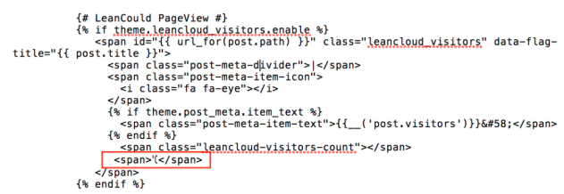
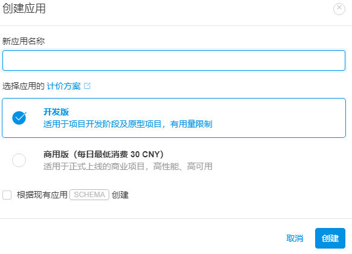
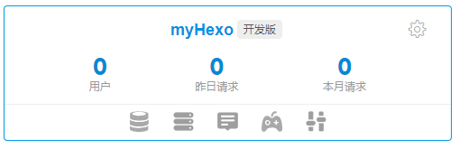
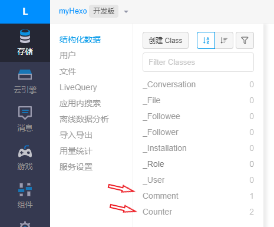
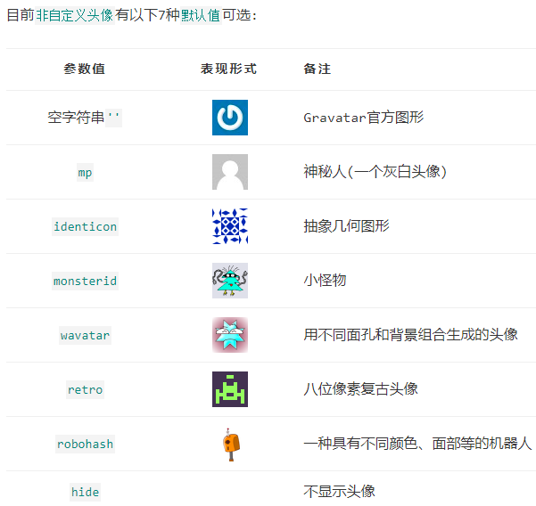

Hexo后续补充
本篇对 The-Starting-Point-of-Blogs 进行一些补充
一、推送处理
1. 静态资源压缩
存在问题未解决
在站点目录下：
1 | $ npm install gulp -g |
安装gulp插件：
1 | npm install gulp-minify-css --save |
在 Hexo 站点下添加 gulpfile.js文件，文件内容如下：
1 | var gulp = require('gulp'); |
只需要每次在执行 generate 命令后执行 gulp 就可以实现对静态资源的压缩，压缩完成后执行 deploy 命令同步到服务器：
1 | hexo g |
Tip可以把上面的三条命令编写进package.json的script，就可一键三连啦！
2. 本地站点推送到GitHub上
在站点更目录下：
1 | $ npm install hexo-deployer-git --save |
在 Hexo 站点的 _config.yml 中配置 deploy：
1 | # Deployment |
hexo g # 生成本地 public 静态文件, hexo d # 部署到 Github 上, 也可以缩写成：hexo g –d 。
Create a new post
1 | $ hexo new "My New Post" |
More info: Writing
Run server
1 | $ hexo server |
More info: Server
Generate static files
1 | $ hexo generate |
More info: Generating
Deploy to remote sites
1 | $ hexo deploy |
二、站点功能
1. 文章加密访问
打开 themes/next/layout/_partials/head.swig文件,在 {% if theme.pace %}` 标签下的 `{% endif %} 之前插入代码：
1 | <script> |
在文章上应用：
1 | --- |
2. 添加热度
进入LeanCloud官网，进行账号注册。登录后，进入控制台，创建应用，应用名为
Hexo创建应用后，点击存储，创建Class，Class命名为Counter，并限制写入
查看AppID和AppKey
打开
Blog/themes/next/layout/_macro/post.swig，command+F搜索leancloud-visitors-count，在图片位置加入<span>℃</span>
编辑主题配置文件，
command+f搜索leancloud_visitors，将其值设为：ture，将AppID和AppKey粘贴到相应位置：
1 | # Show number of visitors to each article. |
3. 添加免登陆评论系统
参考自该博文
3.1 为什么选择Valine
在笔者进行评论系统选择时，我觉得我的需求就是方便，简洁，最重要一点是要支持Markdown ，对比之下，最终选定了这款Valine，当然，如果你不喜欢这样简洁的，可以参考 Hexo（NexT 主题）评论系统哪个好？
3.2 第一步，注册LeanClound,获取APP ID 和 APP Key
Valine 是基于 LeanCloud 作为数据存储的，所以需要注册一个账号
注册完成后，我们找到
创建``应用
在这里填写你的应用名称,名称可以自己定义，然后下面选择
开发版点击创建然后点击应用进入设置，在设置页，我们首先点击存储，查看是否有
Comment和Counter，没有则创建，权限设为无限制。

然后点击设置 > 安全中心 ,将除了数据存储的服务全部关闭
最后点击应用 Key 取得我们
AppKey和App id
3.3. 在Hexo Next主题中配置
首先打开 https://www.jsdelivr.com/package/npm/valine 获取最新的 valine.min.js 的cdn地址
然后我们修改主题配置文件，配置CDN：
1
2
3
4
5再打开配置Valine功能：
1
2
3
4
5
6
7
8
9
10
11
12
13
14
15
16# Valine
# You can get your appid and appkey from https://leancloud.cn
# More info available at https://valine.js.org
valine: # 功能开关
enable: true # When enable is set to be true, leancloud_visitors is recommended to be closed for the re-initialization problem within different leancloud adk version
appid: # Your leancloud application appid #LeanClound获得的appid
appkey: # Your leancloud application appkey #LeanClound获得的appkey
notify: false # Mail notifier. See: https://github.com/xCss/Valine/wiki # 邮件提醒
verify: false # Verification code
placeholder: 欢迎畅所欲言 # Comment box placeholder
avatar: mm # Gravatar style #默认头像设置
guest_info: nick,mail,link # Custom comment header
pageSize: 10 # Pagination size
language: zh-cn # Language, available values: en, zh-cn # 语言，设为zh-cn # 是否开启当前文章阅读量统计
visitor: false # leancloud-counter-security is not supported for now. When visitor is set to be true, appid and appkey are recommended to be the same as leancloud_visitors' for counter compatibility. Article reading statistic https://valine.js.org/visitor.html
comment_count: true # If false, comment count will only be displayed in post page, not in home page
3.4 指定文章（页面）评论功能是否开启
在 Hexo 博客中，评论的功能是在所有页面都默认开启的，但是有的时候我们在页面上不需要显示评论功能，例如分类，标记页面我们并不需要评论功能。
我们可以在 Front-matter 中通过comments属性设置true或false控制该页面或者是文章的评论功能是否打开，如我设置标签页面的评论功能关闭：
1 | title: 标签 |
3.5 自定义头像
Valine 目前使用的是Gravatar 作为评论列表头像。
请自行登录或注册Gravatar，然后修改自己的头像。
评论的时候，留下在Gravatar注册时所使用的邮箱即可。
默认值为:

4. 给博客添加网站地图sitemap
未实现
搜索引擎每天让蜘蛛在网站爬行来抓取页面，网站地图的作用就是给主动给蜘蛛喂数据
网站地图位于网站根目录下，有sitemap.html和sitemap.xml两种格式。百度搜索引擎及多数搜索引擎使用html格式，谷歌使用xml格式。两步完成网站地图自动生成功能。
**安装网站地图生成插件**
1 | npm install hexo-generator-sitemap --save |
1 | npm install hexo-generator-baidu-sitemap --save |
重新启动hexo，系统会在public根目录下生成sitemap.xml文件。
具体收录参考此处
三、常见问题
1. hexo开发环境迁移
参考自 该博主
1.1 环境准备
安装 Git 客户端
安装 node JS
1.2 在 github 官网添加新电脑产生的密钥
1.3 源文件拷贝
将你原来电脑上个人博客目录下必要文件拷到你的新电脑上（比如F:/Blog目录下），注意无需拷全部，只拷如下几个目录：
1 | _config.yml |
1.4 安装 hexo
在 cmd 下输入下面指令安装 hexo：
1 | npm install hexo-cli -g |
1.5 进入 F:/Blog 目录（你拷贝到新电脑的目录），输入下面指令安装相关模块
1 | npm install |
1.6 测试
这时候使用 hexo s 基本可以看到你新添加的文章了。
1.7 部署发布文章
1 | hexo clean // 清除缓存 网页正常情况下可以忽略此条命令 |
1.8 Github 添加 SSH Keys
推荐该博主 GitHub添加SSH key
1.8.1 打开Git Bash命令行窗口
1.8.2 检查是否已有SSH
如果没有，会返回如下信息，继续第三步创建SSH
1 | $ cd ~/.ssh |
如果本地已经有创建SSH，会返回如下信息，表示本地已经有创建过SSH了，跳过第三步，直接看第四步
1 | $ cd ~/.ssh |
1.8.3 创建SSH key
最后一个参数替换成你自己的GitHub注册邮箱
1 | $ ssh-keygen -t rsa -C "your_email@example.com" |
接下来会提示你输入生成的key存放的路径，不设置直接回车的话会默认创建在C:/Users/你的用户账号/.ssh文件夹下
1 | Enter file in which to save the key (/c/Users/Him/.ssh/id_rsa): |
再接下来会提示你输入密码，这个密码是用来每次提交的时候输入确认，可以不设置，直接回车两次
1 | Enter passphrase (empty for no passphrase): |
最后成功后会看到类似如下的输出，表示成功生成SSH key了，可以到C:/Users/你的用户账号/.ssh文件夹下看下
1 | Your identification has been saved in /c/Users/Him/.ssh/id_rsa. |
1.8.4 添加SSH key到GitHub
首先复制.ssh文件夹下id_rsa.pub文件的内容，可以直接用文本编辑器打开复制，也可以用如下命令行复制
1 | $ clip < ~/.ssh/id_rsa.pub |
然后进入https://github.com/settings/keys设置，如果没有登录要先登录
或者登录后依次点击右上角Settings，然后再点击SSH and GPG keys
输入title 和 key
最后点击Add SSH key按钮保存
1.8.5 测试SSH连接
输入如下命令
1 | $ ssh -T git@github.com |
会得到如下输出，询问是否确认连接，输入yes回车确认
1 | The authenticity of host 'github.com (13.229.188.59)' can't be established. |
最后连接成功会看到如下输出
1 | Warning: Permanently added 'github.com,13.229.188.59' (RSA) to the list of known hosts. |
迁移完毕over
2. gitee双线部署提高访问速度
2.1 注册账号
2.2 创建仓库
创建一个与你的Gitee控件地址同名的空项目
比如我的Gitee空间地址为https://gitee.com/Hammerzer，那么创建的项目名为Hammerzer，
可能需要强制修改仓库名
最终博客部署后的访问地址为https://hammerzer.gitee.io
注意：如果创建仓库名称与空间地址不同，则需要访问 如https://hammerzer.gitee.io/hammer,同时也会导致`gitee page`无法显示css、js
2.3 修改配置
复制上一步创建的项目的地址，也就是仓库的SSH地址，类似于git@gitee.com:hhhh/hhhh.git
然后在Hexo配置文件_config.yml中找到deploy配置项，添加如下配置
可多线部署，如下书写（单线部署可不写
github/gitee/coding）记得冒号后有空格
1 | deploy: |
2.4 添加SSH
在Gitee添加自己电脑的ssh key，这样每次更新代码到Gitee就不用再输入密码了
获取电脑的SSH可以参考 常见问题-1-1.8
然后在Gitee的设置页面找到安全设置–>SSH公钥，用上一步获取的SSH创建一个新的公钥
此处插播一条 little tip
上面的实现
markdown自身链接跳转，下面给出所用代码：
<a name="title"> </a>
<a href="#title"></a>
2.5 部署hexo
2.6 开启Gitee Pages服务
- 在项目主页找到服务，点击后可以看到Gitee Pages
- 点击跳转Gitee Pages服务页面，点击启动按钮开启服务
- gitee pages会提示访问地址，然后就可以在浏览器输入https://hammerzer.gitee.io访问
3. hexo双线部署在Gitee上出现的问题
3.1 在移动端出现点击事件失去默认行为
移动端区别于web端，有可能会默认阻止a标签默认行为，且在Web浏览器中调试时不会报错。
因此，只要换一种导航方式，即可。代码如下
1 | var href=document.getElementsByTagName('a'); |
3.2 解决 gitee page 无法自动更新
参考简书该博文
gitee page 只有付费版才能自动更新，免费版只能手动点击 “设置” 中的更新按钮
自动化解决方案：使用 puppeteer 操作浏览器进行更新按钮点击
1 | // 此处安装版本为 1.8.0 |
尝试未成功，待更新
3.3 出现跨域请求失败503
这种情况如果出现，修改网址为https，即可解决
4. 继静态压缩glup无果之后的替代
参考该博主 Hexo瞎折腾系列
4.1 静态压缩的目的和手段
那么怎么提高hexo这个静态博客的页面加载速度呢？可以从以下的几个方面去入手：
- 将js文件尽可能放置到body的闭合标签之前，因为在加载或者引入js文件时是阻塞式的，如果我们在页面的最开始就引入这些js文件，而这些文件又比较大，会造成页面在渲染时长时间处于白屏状态。
- 尽量避免去引用访问速度非常低下的cdn或者图片，可以改用访问速度更快的cdn，或者将难以迅速加载的图片保存到自己的站点目录下，以免在加载图片时耗费了大量的时间，最后还加载不出来。
- 对页面的静态资源进行压缩，包括css、js和html等文件。我们自己添加的css和js文件为了可读性，往往会有很多换行和空格，这些对于浏览器来说并没什么卵用，甚至还会降低渲染页面的速度。至于html文件，由于Markdown转成html的bug，会导致页面存在大量的空白，如果你查看下页面的源代码，就会发现这些大量的空白符，十分难看。这也会造成页面渲染的性能问题。
4.2 hexo的压缩静态资源插件
网上有很多相关的博文，常规的做法是使用gulp来进行压缩，gulp是Node.js下的自动构建工具，通过一列的task执行步骤进行自动流程化处理。
使用这种方法会比较麻烦，每次压缩时还需要输入额外的命令，比较繁琐，个人不是很喜欢，有兴趣的可以去自己了解下相关的东西。这篇教程里很多详细的说明，里边有说到gulp的使用，绝对的精品文章。
这里我选择的是由rozbo大佬开发的hexo-neat压缩插件，配置简单，无需额外命令，你只要使用原本的调试三连或者部署三连就可以自动帮你完成静态资源的压缩！
4.3 如何使用hexo-neat
在站点根目录下安装hexo-neat
1 | npm install hexo-neat --save1 |
4.4 为站点配置文件添加相关配置
下边是我自己站点的相关配置，直接添加到站点配置文件_config.yml的末尾就可以。可以安装自己的需求去自定义配置，不过有些注意事项，可以参考我后文的踩坑记录。
1 | # hexo-neat |
4.5 hexo-neat插件踩坑记录
由于在使用hexo-neat插件时，可以在命令窗口中看到各个文件的压缩率，于是我就开始捣鼓跳过哪些文件可以让效率更高。在鼓捣了一段时间之后，记录下使用该插件的一些注意事项，避免日后重蹈覆辙，也希望能对各位看官有所帮助。
4.5.1 跳过压缩文件的正确配置方式
如果按照官方插件的文档说明来配置exclude，你会发现完全不起作用。这是因为配置的文件路径不对，压缩时找不到你配置的文件，自然也就无法跳过了。你需要给这些文件指定正确的路径，万能的配置方式如下：
1 | neat_css: |
4.5.2 压缩html时不要跳过.md文件
.md文件就是我们写文章时的markdown文件，如果跳过压缩.md文件，而你又刚好在文章中使用到了NexT自带的tab标签，那么当hexo在生成静态页面时就会发生解析错误。这会导致使用到了tab标签的页面生成失败而无法访问。
当初为了找到这个原因花了我两个晚上的时间，简直是夜不能寐。
4.5.3 压缩html时不要跳过.swig文件
.swig文件是模板引擎文件，简单的说hexo可以通过这些文件来生成对应的页面。如果跳过这些文件，那么你将会发现，你的所有页面完全没有起到压缩的效果，页面源代码里依然存在着一大堆空白。
5. 使用自定义的CSS样式
参考 博主 该文章
想自定义About页面，需要使用自定义的css样式因为markdown支持html标签，使用自定义的CSS样式还是不错的。
下面总结一下具体的使用过程：
5.1 添加样式支持
为规范化开发，这里需要添加子集的样式文件。
首先，在样式文件的source文件夹下找到css文件夹，打开main.styl文件，在最后添加：
1 | //My Layer |
5.2 新建自定义样式
找到样式文件夹css 新建_my文件夹，在其中新建mycss.styl文件，之后就可以按照stylus的格式自定义样式了。
5.3 解决 gitee page 更新后css仍然不变
强制刷新浏览器 Shift+F5，这么傻的错误我居然还犯
6. 插入思维导图
参考 简书
6.1 在hexo根目录下安装
1 | npm install hexo-simple-mindmap |
6.2 在Markdown中使用思维导图
1 | {% pullquote mindmap mindmap-md %} |
6.4 存在的问题
搜集资料发现应该就这么操作就可以正确插入思维导图，然而我却遇到了很多问题。
6.4.1 思维导图节点未被渲染
更新gitee pages服务之后，出现思维导图限制框，但思维导图的节点没有被渲染，仍然是以无序列表形式展现
console报错未找到 ‘$’，这么说应该是这个插件直接使用了JQuery但未引用
解决办法一：直接把jquery下载到本地，放在theme/source/js下
然后再Markdown中引入
1 | <script src="/js/jquery.min.js"></script> |
解决办法二：使用cdn，使用时应注意应该使用 https传输，否则像chrome会默认阻止连接 jquery cdn
例如我是把下面的代码在 themes/next/layout/_partials/head/head.swig中全局引入
1 | <script src="https://libs.baidu.com/jquery/2.0.0/jquery.min.js"></script> |
7. 插入流程图
安装hexo-filter-flowchartnpm install --save hexo-filter-flowchart
具体的流程图Markdown语法，见另一篇
8. 插入时序图
安装
1 | npm install --save hexo-filter-sequence |
配置
站点配置文件 _config.yml 中增加如下配置:
1 | sequence: |
修改源码
源码修改后才能正常使用，进入插件目录作如下修改：
1 | // index.js |
1 | // lib/renderer.js, 25 行 |
9. 插入mermiad 甘特图
参考上面的文章，这是我见过的少有的没有坑的文章，点个👍
安装
在blog根目录安装mermaid插件
1 | npm install hexo-filter-mermaid-diagrams --save *# 安装mermaid插件* |
修改配置
- 修改主题theme中的
_config.yml内的mermaid模块为true - 其实可以deploy一下看看可行否，不行再继续（我在这一步就可以正确显示）：在根目录下的
_config.yml中添加
1 |
|
- 其实可以
deploy一下看看可行否，不行再继续：编辑blog/themes/next/layout/_partials/footer.swig，在最后添加如下内容